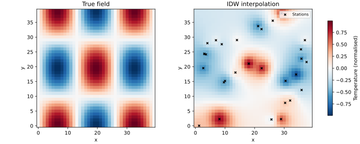

Spatial Interpolation of Climate Data
The Problem
- Weather stations record temperature and precipitation at discrete locations, but models and maps need values everywhere in the study region.
- Spatial interpolation estimates the value at any unsampled location by combining observations from nearby stations.
- The approach here:
- Generate a synthetic network of 30 weather stations whose values are sampled from a known smooth field so that errors can be measured exactly.
- Apply inverse-distance weighting (IDW) to estimate temperature on a regular 40x40 grid covering the same region.
- Evaluate the interpolated surface against the true field using mean absolute error (MAE).
- Estimate prediction skill at new locations using leave-one-out cross-validation.
Why should interpolation give more weight to nearby stations than to distant ones?
- Because distant stations use different instruments and are less accurate.
- Wrong: instrument quality is not related to distance; the justification is that nearby locations tend to have more similar values than distant ones, a property called spatial autocorrelation.
- Because nearby locations tend to have more similar values (spatial
- autocorrelation), so closer stations carry more information about the
- unsampled point.
- Correct: spatial autocorrelation means that the correlation between two location values decreases with distance; IDW formalises this by assigning weights that shrink as distance grows.
- Because nearby stations have more recent observations.
- Wrong: observation time is not part of the IDW model; only Euclidean distance affects the weights.
- Because averaging all stations equally would always overestimate the value.
- Wrong: an equal-weight average is not systematically biased, but it ignores spatial structure and produces poor local estimates when the field varies across the region.
Inverse-Distance Weighting
- For a query point $\mathbf{q}$, let $d_i = |\mathbf{q} - \mathbf{s}_i|$ be the Euclidean distance to station $i$ with observed value $z_i$.
- The IDW estimate is:
$$\hat{z}(\mathbf{q}) = \frac{\displaystyle\sum_{i=1}^{n} w_i\, z_i}{\displaystyle\sum_{i=1}^{n} w_i}, \qquad w_i = d_i^{-p}$$
- The power parameter $p$ controls how fast influence falls off with distance: $p = 2$ is standard in environmental science.
- A small constant $\varepsilon = 10^{-10}$ is added to each $d_i$ to prevent division by zero when a query point coincides with a station.
- Because the weights are non-negative and sum to one after normalization, IDW is a convex combination: all estimates lie within $[\min_i z_i,\, \max_i z_i]$.
Station A is 1 unit from the query point and has value 1.0. Station B is 2 units away and has value 0.0. Using p = 2, what is the IDW estimate at the query point?
Generating Synthetic Station Data
- The true temperature field is $T(x, y) = \sin(3\pi x)\cos(2\pi y)$ on $[0,1]^2$, producing three warm-cool bands in $x$ and two in $y$.
- Station locations are drawn uniformly at random; values are exact samples from this field with no added noise.
- Using a noise-free reference separates interpolation error from measurement error when evaluating the method.
def make_stations(n_stations=N_STATIONS, seed=SEED):
"""Return a Polars DataFrame of synthetic weather station observations.
Columns:
x -- easting in [0, 1]
y -- northing in [0, 1]
value -- observed temperature (sampled exactly from the true field)
Stations are placed uniformly at random within the unit square. Their
values are taken from the smooth true field without added noise so that
the interpolation error can be computed precisely by comparing to the
known reference surface.
"""
rng = np.random.default_rng(seed)
xs = rng.uniform(0.0, 1.0, n_stations)
ys = rng.uniform(0.0, 1.0, n_stations)
values = true_field(xs, ys)
return pl.DataFrame({"x": xs.tolist(), "y": ys.tolist(), "value": values.tolist()})
Computing the IDW Grid
- Each of the 1600 grid points is treated as an independent query.
- All $(m \times n)$ distances are computed at once by broadcasting:
diff = query_xy[:, newaxis, :] - station_xy[newaxis, :, :]yields an $(m, n, 2)$ array; summing squared differences along the last axis gives the $(m, n)$ distance matrix in a single expression with no Python loop.
def idw(station_xy, station_values, query_xy, power=IDW_POWER):
"""Interpolate values at query points using inverse-distance weighting.
Parameters
----------
station_xy : (n, 2) float array of station (x, y) coordinates
station_values : (n,) float array of observed values at each station
query_xy : (m, 2) float array of query point coordinates
power : IDW exponent; larger values give more weight to nearby
stations relative to distant ones
Returns
-------
estimates : (m,) float array of interpolated values at each query point
Each estimate is the weighted average sum(w_i * z_i) / sum(w_i) where
w_i = d_i^(-power) and d_i is the Euclidean distance from the query
point to station i. Broadcasting computes all (m, n) distances at once.
"""
diff = query_xy[:, np.newaxis, :] - station_xy[np.newaxis, :, :]
dists = np.sqrt((diff**2).sum(axis=2)) + EPSILON
weights = dists ** (-power)
return (weights * station_values).sum(axis=1) / weights.sum(axis=1)
def interpolate_grid(station_xy, station_values, rows, cols, power=IDW_POWER):
"""Return an IDW-interpolated field on a regular (rows x cols) grid.
Grid point (i, j) maps to coordinates (j / (cols-1), i / (rows-1)),
matching the coordinate system of make_true_grid in the generator.
"""
x = np.linspace(0.0, 1.0, cols)
y = np.linspace(0.0, 1.0, rows)
X, Y = np.meshgrid(x, y)
query_xy = np.column_stack([X.ravel(), Y.ravel()])
estimates = idw(station_xy, station_values, query_xy, power)
return estimates.reshape(rows, cols)
Order the steps to compute an IDW estimate at a single query point.
Compute the Euclidean distance from the query point to each station, adding epsilon to prevent division by zero. Compute inverse-distance weights: w_i = d_i^(-p). Form the weighted sum of station values. Divide by the total weight to obtain the normalized estimate.
Visualizing the Interpolation
def plot_comparison(true_field, idw_field, station_xy, filename):
"""Save a side-by-side comparison of the true and interpolated fields."""
vmin = min(true_field.min(), idw_field.min())
vmax = max(true_field.max(), idw_field.max())
fig, axes = plt.subplots(1, 2, figsize=(10, 4), constrained_layout=True)
for ax, field, title in zip(
axes,
[true_field, idw_field],
["True field", "IDW interpolation"],
):
im = ax.imshow(
field, origin="lower", vmin=vmin, vmax=vmax, cmap="RdBu_r", aspect="equal"
)
ax.set_title(title)
ax.set_xlabel("x")
ax.set_ylabel("y")
axes[1].scatter(
station_xy[:, 0] * (idw_field.shape[1] - 1),
station_xy[:, 1] * (idw_field.shape[0] - 1),
c="black",
s=15,
marker="x",
label="Stations",
)
axes[1].legend(loc="upper right", fontsize=8)
fig.colorbar(im, ax=axes, label="Temperature (normalised)", shrink=0.8)
fig.savefig(filename)
plt.close(fig)

Cross-Validation
- Leave-one-out cross-validation (LOO-CV) measures how well the interpolation predicts at a completely unsampled location.
- For each of the $n$ stations: remove it, interpolate its value from the remaining $n - 1$ stations, and record the absolute error.
- The mean of the $n$ absolute errors (the LOO-CV MAE) estimates the expected prediction error at a new station location.
- LOO-CV is necessary because IDW nearly reproduces the training value at any station included in the computation: evaluating accuracy on training data would systematically underestimate the true prediction error.
Testing
Station count
make_stations()must return exactlyN_STATIONSrows.
Exact recovery at station location
- IDW at a station's own coordinates must return approximately that station's value; tolerance $10^{-4}$ is justified by the EPSILON perturbation, which gives the co-located station a weight ratio of roughly $10^{20}$:1.
Grid shape
interpolate_gridwithrows=10, cols=15must return an array of shape $(10, 15)$.
Interpolated values in range
- Every IDW estimate must lie within $[\min z_i, \max z_i]$; this is a consequence of IDW being a convex combination of the station values.
Weights decrease with distance
- A query point 0.2 units from station A and 0.8 units from station B must produce an estimate closer to A's value.
Cross-validation MAE below threshold
- LOO-CV MAE must be below 0.3 on the synthetic data; the true field amplitude is 1.0 and 30 stations on this smooth field should achieve well under 30% relative error.
import numpy as np
import pytest
from generate_interp import (
make_stations,
N_STATIONS,
GRID_ROWS,
GRID_COLS,
)
from interp import idw, interpolate_grid
def test_station_count():
# Generator must produce exactly N_STATIONS rows.
df = make_stations()
assert df.height == N_STATIONS
def test_exact_recovery_at_station():
# IDW evaluated at a station's coordinates must return approximately
# that station's value. EPSILON shifts the distance slightly above
# zero, giving the co-located station a weight of (EPSILON)^{-2} ≈ 10^{20}
# relative to any other station; the estimate is therefore exact to
# within about 1e-4 for 30 stations spanning a field of amplitude 1.
df = make_stations()
station_xy = df.select(["x", "y"]).to_numpy()
station_values = df["value"].to_numpy()
query = station_xy[[0], :]
result = idw(station_xy, station_values, query)
assert result[0] == pytest.approx(station_values[0], abs=1e-4)
def test_grid_shape():
# interpolate_grid must return an array of the requested shape.
df = make_stations()
station_xy = df.select(["x", "y"]).to_numpy()
station_values = df["value"].to_numpy()
grid = interpolate_grid(station_xy, station_values, 10, 15)
assert grid.shape == (10, 15)
def test_interpolated_values_in_range():
# IDW is a convex combination: all estimates must lie within the observed
# range of station values.
df = make_stations()
station_xy = df.select(["x", "y"]).to_numpy()
station_values = df["value"].to_numpy()
grid = interpolate_grid(station_xy, station_values, GRID_ROWS, GRID_COLS)
assert grid.min() >= station_values.min() - 1e-9
assert grid.max() <= station_values.max() + 1e-9
def test_weights_decrease_with_distance():
# A query point closer to station A than station B must produce an estimate
# closer to A's value than to B's, because A's inverse-distance weight is
# larger.
stations = np.array([[0.0, 0.0], [1.0, 0.0]])
values = np.array([1.0, 0.0])
query = np.array([[0.2, 0.0]]) # 0.2 from A, 0.8 from B
result = idw(stations, values, query)
assert result[0] > 0.5
def test_cross_validation_mae():
# Leave-one-out cross-validation: remove each station in turn, interpolate
# its value from the remaining 29, and average the absolute errors.
# Tolerance 0.3 is justified by the field amplitude of 1.0 and the
# density of 30 stations on a smooth sinusoidal field: LOO error should
# be well below 30% of the amplitude.
df = make_stations()
station_xy = df.select(["x", "y"]).to_numpy()
station_values = df["value"].to_numpy()
errors = []
for i in range(len(station_values)):
mask = np.ones(len(station_values), dtype=bool)
mask[i] = False
pred = idw(station_xy[mask], station_values[mask], station_xy[[i]])
errors.append(abs(pred[0] - station_values[i]))
assert np.mean(errors) < 0.3
Spatial interpolation key terms
- Spatial interpolation
- The estimation of a continuous field at unsampled locations from observations at a discrete set of known locations; methods range from inverse-distance weighting to kriging, which additionally accounts for the spatial covariance structure of the field
- Inverse-distance weighting
- An interpolation method that estimates the value at a query point as the weighted average of all station values, with each station's weight equal to its inverse distance to the query point raised to a power p; larger p concentrates influence on the nearest stations
- Leave-one-out cross-validation
- A model-evaluation procedure in which each observation is held out in turn, the model is fitted on the remaining observations, and the error for the held-out point is recorded; averaging over all held-out points estimates prediction skill on new data without requiring a separate test set
Exercises
Effect of the power parameter
Run IDW with $p$ values of 1, 2, 4, and 8 on the synthetic station data. For each value compute the LOO-CV MAE and plot the interpolated field. How does the surface change as $p$ increases? Which $p$ minimises LOO-CV error on this dataset?
Nearest-neighbour interpolation
Implement nearest-neighbour interpolation: assign each grid point the value of its closest station, equivalent to IDW as $p \to \infty$. Compare the MAE and visual appearance of the nearest-neighbour field to the IDW field at $p = 2$.
Station density sensitivity
Generate station sets of size 5, 15, 30, and 60, each with a different random seed, and compute the LOO-CV MAE for each. Plot MAE as a function of station count. Does the error halve when the station count doubles?
Measurement noise
Modify the generator to add Gaussian noise with standard deviation 0.1 to each station's observed value. How does the LOO-CV MAE change compared to the noise-free case? Is there an optimal $p$ that reduces the impact of measurement noise?